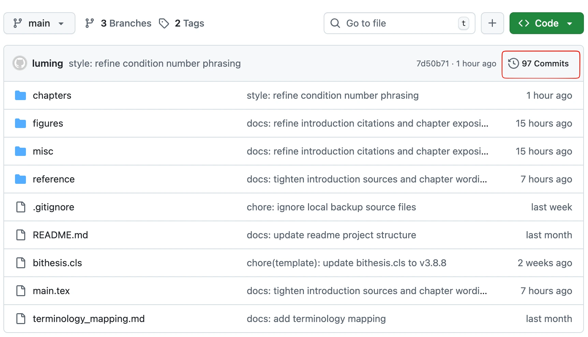
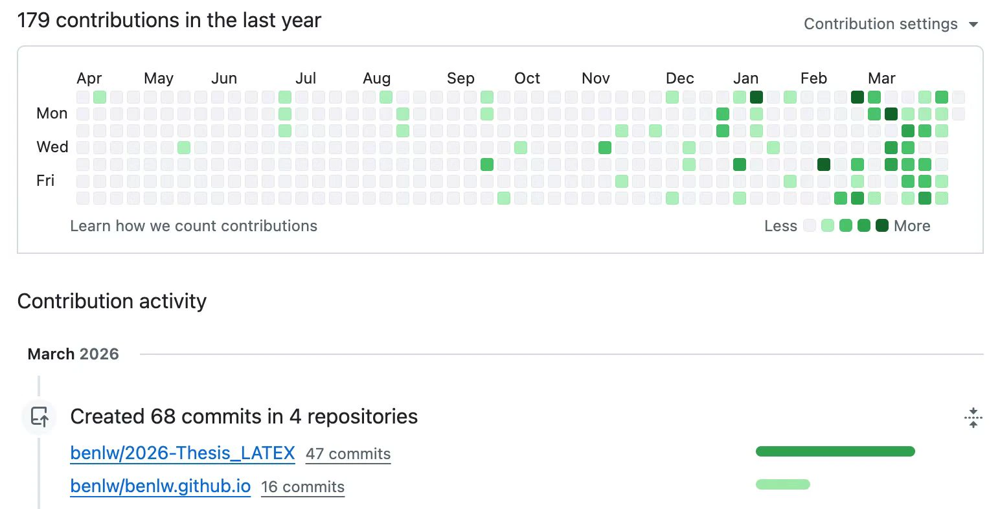
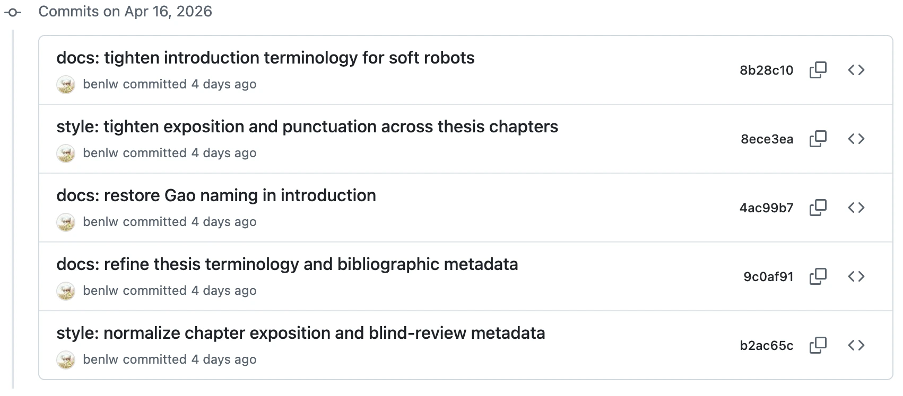

致谢页之外
打印论文，预答辩
今天去学服打印了几份论文用于预答辩，后来又去北湖晒了会太阳。走到这里，忽然更想先记下一声感谢。其实很早之前论文就已经进入尾声，但真正把它打印出来、拿在手里时，才更清楚地意识到这背后也一路留着许多善意、支持、讨论与陪伴。
回头看这些年，真正支撑我走到这里的，不只是论文里的公式、证明和文字，也是在许多具体日子里得到的关照与扶持。给予方向与耐心指导的师长，彼此启发、相互鼓励的同伴，始终包容与陪伴的家人，图书馆那些洒满阳光又安静的时光，以及学术长河中先行者留下的思考与探索，共同构成了论文背后的底色。
接下来便是正式的预答辩和盲审环节，先向这一路上的善意认真道一声谢。
论文修订从
v0.0.1 走到 v0.0.97，距离
v1.0.0 已经不远了。


论文正式送审
2026 年 4 月 16 日，论文正式提交送审。
第二天去了西安，参加学术研讨会。送审之后还能出去开一次会、做一次报告，对我来说反而像是一个很自然的过渡：论文先交出去，自己也终于从反复校对格式和细节的状态里退出来一点，重新回到更开阔的学术讨论中。
